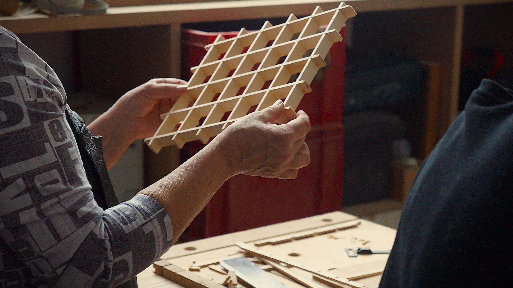

Мастер-классы
Созданы для тех, кому интересно узнать, как устроена работа с деревом.

В мастерской можно познакомиться с разными породами дерева, инструментами и основными принципами работы с материалом.
Мы будем проходить основные этапы создания деревянных изделий, пробовать разные техники обработки, наблюдать за характером дерева и постепенно находить свой собственный способ взаимодействия с материалом.